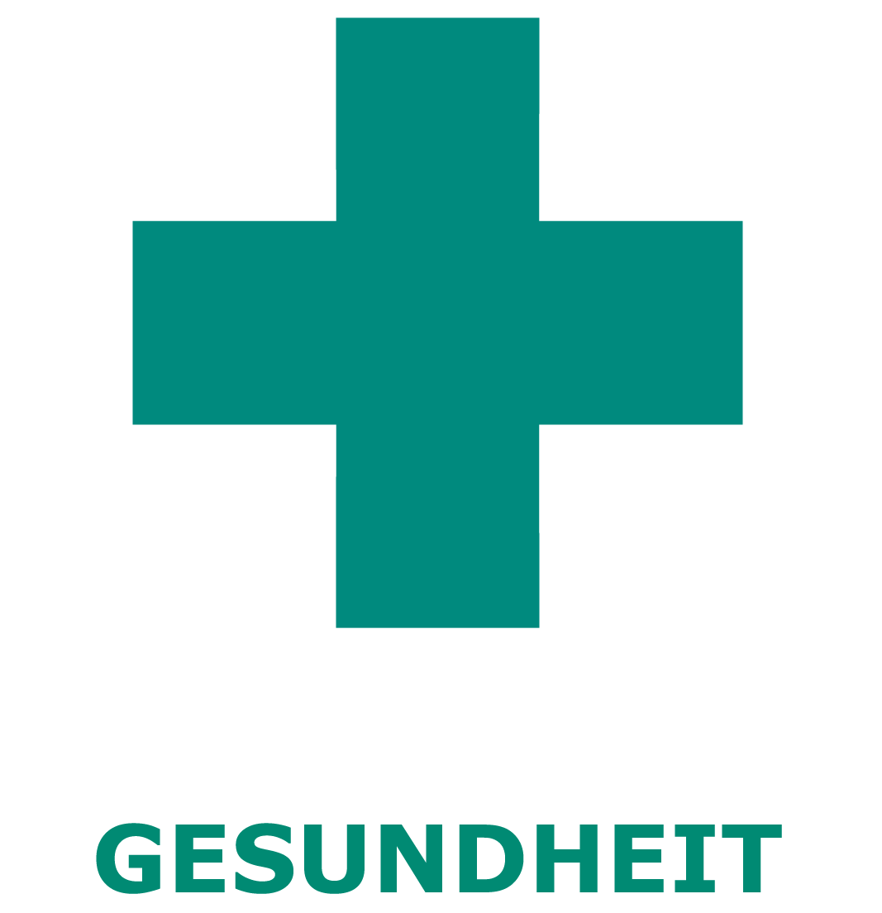
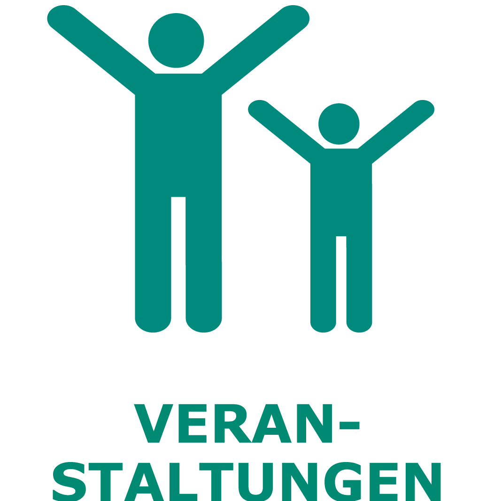

x
Menu
Hude-Info
Sehenswürdigkeiten
Klosterbezirk
Klosterruine
Wassermühle
Klosterschenke
Torkapelle
Museum
Kulturpfad
Sonnenuhr
Sundial
Sünnenklock
Planetenlehrpfad
Planetary educational path
Planetenlehrpfad
Sonne
Sun
Sünn
Merkur
Mercury
Merkur
Venus
Erde
Earth
Welt
Mars
Jupiter
Saturn
Uranus
Neptun
Pluto
Artesischer Brunnen
Artesian well
Artesische Pütt
Vielstedter Bauernhaus
Vielstedter farmhouse
Vielstedter Buurhuus
Ziehbrunnen
Well
Pütt
Wanderweg Huder Bach
Creek trail Huder Bach
Wanderweg Huder Bach
Ziehbrunnen
Well
Pütt
Skulpturenufer
Sculptureshore
Skulpturenufer
Klosterbezirk
Monastery area
Klosterbezirk
Zeitstrahl 2000
Straße der Megalithkultur
Hasbruch
Wittemoor
Unterkünfte
Hotels
Hotel Burgdorf
Hotel Garni
Hotel Klosterschänke
Gastronomie
EC-Automaten
Einkaufen
Parken
Gesundheit
Veranstaltungen
Hude-Perfekt
Schnitzeljagd
Spielplätze

